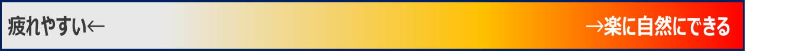
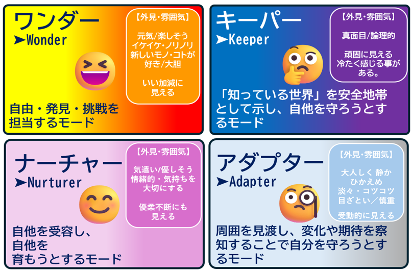
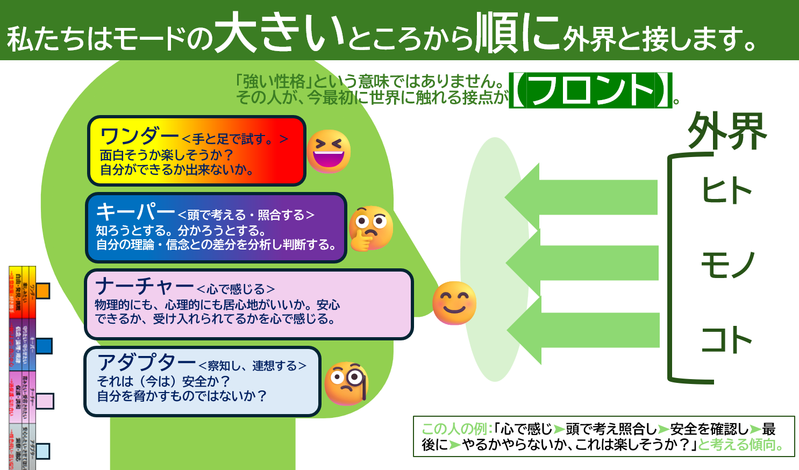

ワンダー｜楽しみたい
自由・発見・挑戦へ向かうモード。面白さを見つけ、まず試してみる軽やかさや、新しい可能性を広げる力として表れます。

RIESM™の受検、お疲れ様でした。
このページでは、お手元のレポート（コックピット）をより深く読み解き、
日常の関係性やキャリアに活かしていくためのヒントをご案内します。

コックピットは、6種類の「興味の蛇口」から生まれるエネルギーを、4つのモードや24の役割でどのように使いやすいかを表した全体図です。
数値は優劣や「できる・できない」を示すものではなく、現在その役割をどのくらい自然に使いやすいか、使うとどのくらい疲れやすいかを読むための目安です。

4つのモードは、心のエネルギーを外の世界でどのように使いやすいかを表します。どのモードも生きていくために必要な働きであり、優劣はありません。

自由・発見・挑戦へ向かうモード。面白さを見つけ、まず試してみる軽やかさや、新しい可能性を広げる力として表れます。
信念・論理・規律を大切にするモード。筋道を立て、基準や約束を守り、物事を確かな形に整える力として表れます。
保護・調和へ向かうモード。人や物事を育み、相手の気持ちを受け止め、安心できる関係や場をつくる力として表れます。
洞察・適応へ向かうモード。状況や相手をよく見て、安全を確かめながら、その場に合う振る舞いを選ぶ力として表れます。

現在もっとも使いやすく、外の世界との関わりで前面に出やすいモードです。
自分の平均に近く、必要な場面で比較的使いやすい待機中のモードです。
使えないモードではありません。今は使う際に、より意識やエネルギーが必要になりやすい位置です。
興味の蛇口は、「何に心が動き、どのような活動へエネルギーを注ぎやすいか」を6つの領域で捉えたものです。蛇口の大きさは能力の有無ではなく、興味の向きやエネルギーの湧きやすさを表します。
身体を動かす、道具を扱う、現場で確かめるなど、行動を通して世界を感じることへの興味です。
仕組みや原理を調べ、考え、理解を深めることへの興味です。
枠を越えて、感性やアイデアを自分らしい形で表現することへの興味です。
人を支え、協力し、誰かや社会の役に立つことへの興味です。
目標を掲げ、働きかけ、成果や変化を生み出すことへの興味です。
手順や基準に沿って、情報や環境を正確に整えることへの興味です。

デジタル・モードは、テキストコミュニケーション、オンラインでの関わり、デジタル全般に対する得意意識や疲れやすさを読み取る参考グラフです。技術的に「できる・できない」を判定するものではなく、現在の主観的な安心感や負担感を表します。固定値ではなく、経験・環境・その時の状態によって変わります。
あなたの大切なご家族、ご友人、職場の同僚の方にもRIESM™をご紹介ください。
以下のリンクからお申し込みいただくと、通常価格よりお得な3,000円（税込）でご受検いただけます。
ご紹介用URL（コピーして共有してください）
プロのカウンセラーによるオンライン個別セッションです。
結果を読み解くだけでなく、対話を通してあなただけの強みや、これからの行動への気づきをサポートします。
心の定期メンテナンスとしてもご利用ください。